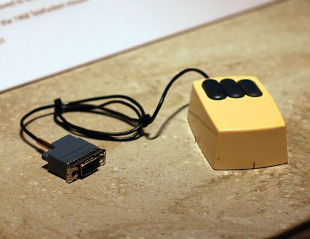
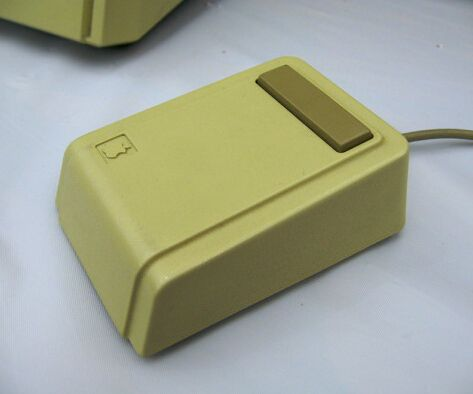
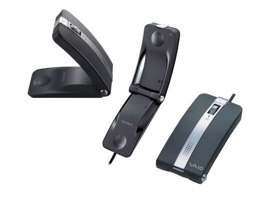
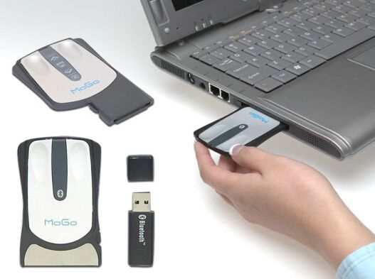
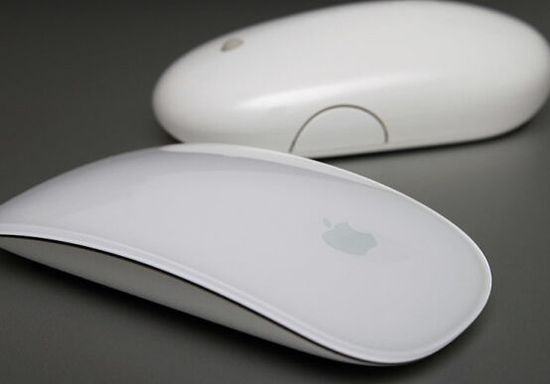
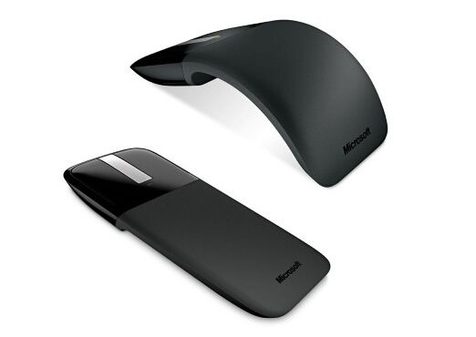
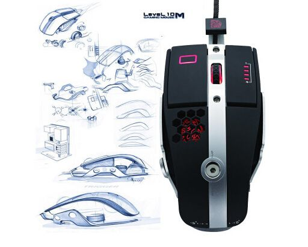

Since its birth in the mid-1960s, the mouse has undergone countless changes. These changes have made it more comfortable to use, more ergonomic, and more portable. This article will take you back through the mouse's journey from its humble beginnings to the futuristic designs of today.
The Mouse in a House

At the Mother of All Demos in 1968, Douglas Engelbart from Stanford Research Institute (SRI) showcased a variety of computer technologies and interface breakthroughs to the world. Among the exhibits was the mouse prototype completed in 1964. At that time, people commonly referred to the mouse as the "X-Y position indicator for a display system." This mouse prototype had two wheels and a wooden casing, and could move in both horizontal and vertical directions. The patent submitted by SRI was approved in 1970, and was eventually licensed to companies such as Apple and Xerox.
The Mouse That Rolls Left and Right

During the same period that SRI was developing the mouse, Germany's Telefunken company was working on a similar project. Their design had no wheels or X-Y coordinate system; instead, it featured a spherical structure (similar to later mechanical mice). The trackball design was somewhat similar to SRI's model, but was independently developed by the Germans.
PARC (Xerox Palo Alto Research Center)

The world's earliest desktop computer, the AITO, was developed and brought to market by PARC in 1973, but these personal workstations were not commercialized; they were mostly used within the Xerox corporation and on university campuses. These products featured a special version of the SRI-developed input interface. AITO users were quickly attracted to the mouse, confirming its market potential.
The Mouse Without a Trackball

Trackball mice faced the problem of becoming clogged with dust and dirt. In 1981, Steven Kirsch developed an optical model for the mouse. The same year, PARC developed a similar version. These mice used light to track movement and no longer needed a trackball. However, to work properly, they required a mouse pad.
The Mouse Enters the Market

Jobs first saw the mouse when he visited PARC in 1979, and he was extremely excited. This experience inspired him to equip the Apple Lisa, launched in 1983, with a similar device. The Lisa was the earliest commercial computer. A similar but more angular mouse was used on the Macintosh, which Apple released in 1984.
The Smart Mouse That Doesn't Need a Mouse Pad

In the years following the mouse's debut, scroll wheels were gradually added. The IntelliMouse launched by Microsoft in 1996 was one of the representatives of scroll-wheel mice. In 1999, Microsoft replaced the traditional trackball design with an optical LED. Of course, this problem had already been solved in 1981, but this improved optical mouse no longer needed a mouse pad.
The Ball Returns

Trackball mice control the cursor on the screen by rolling an exposed ball. This technology dates back to the 1950s, when it was part of a Canadian military project called DATAR. In 2000, Microsoft combined this technology with tracking technology, allowing users to use a finger, or just a thumb, to precisely control the brightly colored protruding trackball.
Apple's Pro

Apple continued to develop its own wired mice, but its design philosophy was to simplify. In 1998, the company released the iMac series, its first mouse with a USB interface, but its round design was unimpressive and even baffling to most users, earning it the nickname "hockey puck." In 2000, Apple released the Pro Mouse, housed in clear plastic, with an integrated body replacing visible buttons.
S+ARCK

Apple was not the only company relying on design to drive product sales. In 2004, Microsoft launched its own futuristic optical mouse based on S+ARCK. This stylish mouse, designed by Philippe Starck, was Microsoft's first attempt to incorporate artistic elements into product design. Thanks to its symmetrical structure, the mouse was also suitable for left-handers.
Beyond the Visual Realm

Over the years, Sony designed a series of stylish and distinctive wired mice for its VAIO line, but few were as eye-catching as the Talk (VN-CX1) released in 2006. This USB-enabled mouse could turn into a phone when you needed it. It combined a classic flip phone with a portable mouse. When chatting, the scroll wheel could also serve as a volume control.
Mouse Development Trends

The diversification of portable computers drove mouse manufacturers to explore new ways to shrink their devices. As early as 1984, Logitech pioneered the wireless mouse. In 2005, Newton Peripherals released the ultra-thin MoGo Bluetooth mouse. When not in use, it could be plugged into a computer's card slot for charging.
Incredible

Apple improved its Pro mouse series and released a version supporting a multi-directional scroll ball in 2005. The mouse's two buttons were very sensitive, and its side buttons were programmable. The Magic Mouse, released in 2009, further simplified this design, with the smooth top serving as a gesture input device, allowing users to scroll and click anywhere on the mouse's surface.
The Bendable Type

In 2010, Microsoft once again launched a new product: the bendable Arc mouse. This mouse could lie flat when traveling or idle, and bend into a shape that fit your palm when you wanted to use it. It had responsive touch scroll strips and two buttons at the front, and the rest of the body could bend. Its BlueTrack technology claimed to work on rough wooden surfaces, and even on carpets.
Industrial Design

After BMW and Thermaltake collaborated in 2012, mouse design developed rapidly. The 10 M mouse they developed was a super industrial product, supporting angle adjustment and equipped with a ventilated palm rest, customizable buttons, and an aluminum base.
A Mouse with a Home
Setting design aside, every mouse should be comfortable to use. With this in mind, Japanese toy manufacturer Thanko launched this mouse with a heated mouse pad in 2010, effectively warding off the cold and keeping your fingers warm and flexible.
Reprinted from: http://www.leiphone.com/news/201412/VMCt6DkAn5bpts8y.html